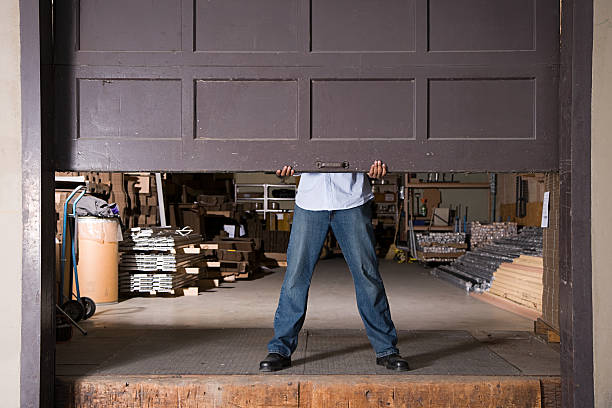

Sage California
info@chikegaragedoorrepair.xyz
Sage California
info@chikegaragedoorrepair.xyz

Expert garage door repair in Sage California . Our skilled technicians ensure fast, reliable service with high-quality parts. Trust us for affordable and efficient repairs. Call us today!
Click Here To Call Us (888) 964-1837Is your garage door acting up or failing to function correctly? At Chike Garage Door Repair, we specialize in top-quality garage door repair services throughout Sage California . Our team of certified technicians is dedicated to providing fast, efficient, and affordable solutions to get your garage door back in top condition.
We understand that a malfunctioning garage door can disrupt your daily routine and compromise your home’s security. That’s why we offer prompt and reliable repairs to address a wide range of issues, including broken springs, faulty openers, and misaligned tracks. Our commitment to excellence ensures that we use only high-quality parts and state-of-the-art tools to deliver long-lasting results.
Whether you need emergency repairs, routine maintenance, or a complete garage door replacement, Chike Garage Door Repair is here to help. Our experienced professionals are trained to handle all types of garage doors, providing you with tailored solutions that meet your specific needs.
Choose us for your garage door repair needs in Sage California and experience unparalleled service and satisfaction. Contact us today for a free estimate and let us restore the functionality and security of your garage door.
Residential & commercial Garage Door repair
Quality services at affordable prices
Immediate 24/ 7 emergency services


If your garage door won’t open or close, it’s more than just an inconvenience—it can be a sign of underlying issues that need immediate attention. At Chike Garage Door Repair, serving Sage California we specialize in diagnosing and resolving these common garage door problems efficiently and effectively.
Power and Remote Issues
The first thing to check is whether the garage door opener has power. Ensure that the opener is plugged in and that the circuit breaker hasn’t tripped. If the opener is functional but the door still won’t move, the issue might be with the remote control. Try replacing the batteries or reprogramming the remote to see if that resolves the issue.
Obstructions and Sensors
A common cause for a garage door that won’t open or close is obstructions or malfunctioning sensors. Check for any debris blocking the door’s path or sensors. The safety sensors located near the floor must be aligned properly and free of dirt. Misaligned or dirty sensors can prevent the door from functioning correctly.
Broken Springs or Cables
Garage door springs and cables bear the weight of the door, making them critical to its operation. If the springs or cables are broken, the door will be unable to open or close properly. Look for signs of wear, such as gaps in the springs or frayed cables. Replacing these components typically requires professional assistance for safety.
Track and Roller Issues
Inspect the tracks and rollers for any obstructions or damage. A door that’s off track or has damaged rollers may not operate smoothly. Professional repair services can realign the tracks and replace any damaged rollers to restore proper function.
For reliable garage door repair services in Sage California trust Chike Garage Door Repair. Our expert technicians are equipped to handle any issues with your garage door, ensuring it operates smoothly and reliably. Contact us today for a comprehensive inspection and prompt repair solutions.
Residential & commercial Garage Door repair
Quality services at affordable prices
Immediate 24/ 7 emergency services
A **broken garage door** can lead to safety concerns and increased vulnerability for your property. Our **broken garage door repair services** in Sage California are designed to address any issues you might face effectively and efficiently.
Our technicians arrive fully prepared to diagnose the problem, whether it’s a broken spring, malfunctioning motor, or other issues. We understand the urgency of having a broken door, which is why we prioritize fast and reliable repair services designed to restore your door's functionality as quickly as possible.
Choosing us means you are opting for a professional service focused on quality repairs and thorough customer support. We use high-quality parts to ensure your garage door remains reliable after repairs, giving you confidence in our work.

Garage door sensors are integral to your door’s safety system, preventing accidents and injuries. If your sensors are malfunctioning, it’s essential to address the issue promptly. Our garage door sensor repair services ensure your door operates safely and effectively.
What makes us the best choice for sensor repairs? Our technicians have extensive experience diagnosing and fixing sensor issues, ensuring your garage door is both functional and safe. We guarantee quality service using premium parts and take pride in our thorough, reliable approach to repairs.

Roll-up garage doors offer convenience and space-saving solutions, but when they malfunction, they require specialized care. Our **roll-up garage door repair services** are tailored to diagnose and resolve a variety of issues effectively.
We understand the mechanics behind roll-up doors, whether they are manual or automatic, and we possess the experience necessary to troubleshoot and repair any related problems, from spring replacements to track realignments. Our technicians are trained to handle different types of roll-up doors, ensuring that you get the best possible service, tailored to your specific door type.
By choosing our service, you're selecting a company dedicated to quality and efficiency. Our commitment to timely repairs, paired with excellent customer service, ensures that your satisfaction is our top priority.

When it comes to a malfunctioning garage door, broken springs are often the culprit. Our **garage door spring replacement services** are designed to quickly and safely replace the springs on your door to restore its functionality.
Spring replacement can be dangerous if not handled by a professional; our experienced technicians are trained to safely and efficiently replace springs, ensuring your garage door operates smoothly. We use only high-quality springs suited to your garage door specifications, offering durability and improved performance.
We provide honest assessments, discussing your options and ensuring you understand the repair process. Choosing us for your spring replacement guarantees reliability and professionalism, so you can rest assured that your garage door is safe and effective once again.

A broken garage door can disrupt your daily routine and pose security threats. Our broken garage door repair services in Sage California aim to restore your door’s functionality quickly and efficiently. We understand the urgency of the situation, and our skilled technicians will arrive at your location equipped with the tools and expertise to resolve the issue. Our commitment to customer satisfaction and high-quality repairs ensures that your garage door will operate safely and reliably after our service.
Hinges are small components that play a significant role in the proper functioning of your garage door. Over time, they can wear out or become damaged, hindering the door's operation. Our garage door hinge repair services focus on addressing these issues promptly. Our expert technicians will inspect the hinges, determine the problem, and recommend whether repairs or replacements are necessary. We utilize high-quality parts to ensure that your garage door operates smoothly. Choose us for reliable hinge repair services, and enjoy hassle-free access to your garage once more.

Roll-up garage doors require specialized attention when issues arise. Our roll-up garage door repair services in Sage California ensure that these complex systems are handled with care and expertise. Whether it’s a malfunction in the coil mechanism or damage to the panels, our qualified technicians will diagnose the issue and provide precise repairs. We understand the importance of keeping your roll-up door functional, and our commitment to quality means you’ll receive the best possible service from our team.

Spring failures are among the most common issues homeowners face with garage doors. When it’s time for garage door spring replacement in Sage California our dedicated team is here to help. We specialize in both torsion and extension spring replacements and ensure that the entire process is carried out safely and effectively. Using high-quality springs minimizes the risk of future issues and maximizes your door's lifespan. Our professionals are trained to handle spring replacements with care, understanding the tension and safety involved. Choose us to provide a seamless replacement process, so your garage door operates smoothly and reliably once again.
Years Experience
Expert Technicians
Satisfied Clients
Compleate Projects
When it comes to garage door repair in Sage California Chike Garage Door Repair stands out as the premier choice for quality and reliability. Our commitment to exceptional service and customer satisfaction sets us apart from the competition. With years of experience in the industry, we have built a reputation for excellence that you can trust.
At Chike Garage Door Repair, we understand that a malfunctioning garage door can disrupt your daily routine and compromise your home's security. That’s why we offer prompt, efficient, and affordable repair services tailored to meet your specific needs. Whether it's a broken spring, a faulty opener, or damaged panels, our skilled technicians are equipped with the expertise and tools to handle any issue with precision and care.
We pride ourselves on delivering high-quality repairs that restore your garage door’s functionality and ensure long-lasting performance. Our team is dedicated to using the latest techniques and top-grade materials to guarantee a job well done. Additionally, we offer transparent pricing with no hidden fees, so you know exactly what to expect.
Choosing Chike Garage Door Repair means opting for a company that values integrity, professionalism, and customer satisfaction. We are fully licensed and insured, providing peace of mind with every service we perform. Experience the difference of working with a trusted local expert who prioritizes your needs and exceeds your expectations. Contact us today to schedule your garage door repair in Sage California and enjoy the reliable service that makes Chike Garage Door Repair the best choice in town.
In today's world, ensuring your home is secure and accessible is of paramount importance, and a functioning garage door plays a vital role in achieving this. At our company, we specialize in **residential garage door repair** services tailored to meet the unique needs of homeowners in Sage California . Our expert technicians are equipped with the latest tools and knowledge to handle a wide range of issues, from minor repairs to major replacements.
When you choose us, you're choosing prompt service, exceptional customer care, and quality workmanship. We understand that a malfunctioning garage door can disrupt your daily routine, which is why we offer fast and efficient repair services. Common issues we address include broken springs, misaligned tracks, and faulty openers.
Our commitment to transparency means you will receive a detailed estimate before we start any work, ensuring no hidden costs come up later. With years of experience in the field, our teams are trained to diagnose problems quickly and suggest the most effective solutions. Additionally, we pride ourselves on using high-quality parts and materials for all repairs, enhancing the durability of your garage door and giving you peace of mind.
In the heart of any thriving business lies a commitment to functionality and security, particularly when it comes to commercial garage doors. Our **commercial garage door repair** services in Sage California are designed for businesses that cannot afford downtime. A broken garage door can impact operations, access, and security, potentially costing you both time and money.
Our skilled technicians understand the complexities of commercial garage door systems, from roller doors to sectional overhead doors. We pride ourselves on our rapid response times, ensuring that our team can get to your location and restore function promptly. Our 24/7 emergency repair services mean that you're never left waiting long—because we know how critical every minute is to your business.
Choosing us means you are investing in quality service tailored specifically to your commercial needs. Our expertise extends to maintenance agreements that can help prevent future issues, providing you with scheduled inspections and proactive care. Furthermore, our commitment to customer service means we work around your schedule, minimizing disruption to your operations. Whether you operate a small shop or a large industrial facility, we have the knowledge and experience to ensure your garage door remains a reliable aspect of your business.
Garage door springs are crucial for the proper functioning of your garage door. A broken or malfunctioning spring can prevent your door from opening or closing correctly. In Sage California we offer professional garage door spring repair services to get your door back in operational condition. Our skilled technicians will expertly assess the situation, check for additional issues, and replace or repair your springs efficiently.
Why choose us for garage door spring repair? Our technicians are experienced and trained to handle various spring types, including torsion and extension springs. We emphasize safety in our repairs, utilizing high-quality, durable springs and following all safety precautions to ensure long-lasting results.
Your garage door opener plays an essential role in the convenience and functionality of your garage door. If your opener is acting up, it can be frustrating and inconvenient. Our garage door opener repair services cover a wide range of issues, including malfunctioning remotes, worn gears, and complete system failures. With years of experience behind us, our team can diagnose and repair any brand and style of garage door opener. We additionally offer installation of newer, high-tech models that enhance your door's performance and security. Our reputation as the best garage door repair company is built on our commitment to service quality, professionalism, and customer satisfaction.
It’s a common misconception that quality garage door repair services come with exorbitant prices. At our company, we believe everyone deserves access to reliable garage door repair without breaking the bank. We offer affordable garage door repair services with no compromise on quality. Our transparent pricing structure ensures you know exactly what you’re paying for. Plus, our experienced technicians work quickly and effectively, saving you both time and money. When you choose us, you choose quality and affordability.
If you need a new garage door, our garage door installation services in Sage California are here to help. We offer a vast selection of styles, materials, and colors to choose from, ensuring your new door matches your home’s aesthetic. Our installation team is highly skilled, ensuring that your new garage door is installed correctly and safely.
Why choose us for your garage door installation? Our commitment to excellence is reflected in our workmanship and customer care. We provide a seamless installation process, from helping you select the perfect door to completing the installation with precision and efficiency. Plus, we stand behind our work with warranties for materials and labor.
If your garage door is showing signs of wear and tear, pay close attention to the cables. The cables are essential components that help lift and lower your garage door smoothly. We offer specialized garage door cable repair focusing on ensuring that your garage door operates safely and efficiently. Our expert technicians are trained to identify signs of frayed or damaged cables and will carry out repairs or replacements as necessary to prevent further issues. We approach each job with meticulous attention to detail, ensuring that your garage door system is balanced and functioning correctly. Choose us for reliable cable repair and restore the safety of your garage door.
Your garage door plays a vital role in your home’s security and curb appeal. When it malfunctions, you need a service you can trust. Our residential garage door repair service specializes in diagnosing and repairing all types of issues, from broken springs and cables to malfunctioning openers. With our team of professional technicians, you can expect prompt service, expert advice, and guaranteed satisfaction. We use high-quality parts for all repairs, ensuring that your garage door operates as good as new.
Businesses rely on efficient and functional garage doors to operate smoothly. A malfunctioning commercial garage door can disrupt operations and incur losses. Our commercial garage door repair services are designed to minimize downtime and get your door back in action quickly. With a team of skilled technicians who understand the complexities of commercial systems, we provide targeted and effective repairs. Whether it’s a rolling steel door or a sectional door, we have the expertise to handle all your commercial garage door needs.
If you’re experiencing issues with your garage door motor, it’s essential to get professional help right away. Our **garage door motor repair services** in Sage California are expertly designed for those encountering problems with their motor systems. Motor failures can lead to significant inconveniences, and our skilled technicians are here to diagnose and fix the issue efficiently.
We understand that each garage door motor can vary significantly depending on the make and model, which is why our technicians are trained to handle a diverse range of systems. Whether it’s an electrical failure, worn gears, or remote control issues, we’ll pinpoint the exact source of the problem.
With our commitment to using only high-quality replacement parts and thorough repair practices, you can trust that we will get your motor back to optimal working condition. Our service is designed not only to fix the current issue but also to prevent future failures, ultimately providing peace of mind with your garage door operation.
When searching for the best garage door repair company look no further! Our commitment to excellence, reliability, and customer satisfaction sets us apart from our competitors. With years of experience under our belts, we ensure that every repair and installation is executed with precision. Our team of skilled technicians is dedicated to keeping abreast of the latest trends and technologies in garage doors to provide you the best service possible. Customer feedback and satisfaction are at the core of our business model, and we work hard to build trust and reliability with each job we undertake. Let us show you why we are considered the best choice for all your garage door repair needs.
Emergencies don’t follow a schedule, which is why our **24-hour garage door repair services** in Sage California are so crucial. When your garage door suddenly malfunctions late at night or early morning, our trained technicians are ready to assist. Our commitment to being available around-the-clock ensures that you won’t be left in a frustrating situation for long.
We understand how vital your garage door is to your daily routine and security, so we prioritize rapid response times and effective solutions. Our technicians arrive fully equipped to handle most emergency repairs on the spot, ensuring you can get back to your day without delay.
We stand behind our work, offering affordable rates even for emergency services. With our reliable and efficient response, we make sure that your safety and convenience come first at all hours. You can trust us to be the dependable service provider you need in times of unexpected repairs.
Regular maintenance of your garage door can extend its lifespan and prevent unexpected breakdowns. Our garage door maintenance services include comprehensive inspections, lubrication, and adjustments to keep your door operating smoothly. We recommend routine maintenance to catch minor issues before they escalate into costly repairs. Our team of professionals is committed to ensuring your garage door serves you well for years to come. With our service, you can avoid the hassle of emergencies and enjoy a reliable door every day.
The motor is one of the most critical components of your garage door opener. If you're facing issues with your garage door not opening or closing properly, it could be a sign of motor problems. Our garage door motor repair services are specifically designed to address motor-related issues efficiently. Our skilled technicians can diagnose whether repair or replacement is necessary, and we use only high-quality parts to ensure lasting performance. We understand the urgency when your garage door becomes inoperable, so we give each job our full attention to get your motor running efficiently again. Trust our years of experience to restore the functionality of your garage door motor quickly and effectively.
As a local company, we understand the unique garage door needs of residents . Our local garage door repair services prioritize convenience, ensuring you receive prompt and reliable assistance whenever you need it. With a focus on community service, we are proud to support our neighbors with high-quality repairs.
Why choose our local services? We pride ourselves on our strong customer relationships and our commitment to quality. Our technicians are familiar with the common issues that arise in the area and can diagnose and fix problems quickly. We aim to be a trusted part of the Sage California community, providing excellent garage door repair services.
Experiencing issues with your garage door remote can be frustrating. Our **garage door remote repair services** address this problem head-on, restoring the convenience of remote-controlled access to your garage.
Our technicians are highly trained in diagnosing and repairing problems related to remote systems, including programming issues, battery replacements, or issues within the opener itself. We are here to ensure that you regain seamless access to your garage.
Transparency is key; we provide clear explanations of any issues and solutions available to you upfront, ensuring you’re comfortable with the work being undertaken. With a focus on quality and customer satisfaction, we aim to provide dependable repairs that guarantee efficient remote performance.
Overhead garage doors are convenient and functional, but they can also require specific repairs as issues arise. Whether it’s a broken spring, malfunctioning opener, or a need for panel replacement, we specialize in overhead garage door repair in Sage California . Our technicians have extensive experience working on overhead systems and understand the nuances involved. We proudly offer quality workmanship combined with customer service excellence that will keep your overhead door operating safely and effectively for years to come.
Dealing with broken garage door springs can be challenging and potentially dangerous. At Chike Garage Door Repair, serving Sage California we emphasize the importance of safety and proper techniques when it comes to replacing or repairing broken springs. Here’s a guide to handle this issue effectively and safely.
**1. Identify the Problem
Before taking action, confirm that the springs are indeed broken. Common signs include a door that won’t open fully, visible gaps in the springs, or a loud bang indicating spring failure. Proper diagnosis is crucial for determining whether a repair or replacement is needed.
**2. Safety First
Garage door springs are under high tension and can cause serious injury if not handled correctly. Always ensure the power to the garage door opener is disconnected before starting any work. Wear safety goggles and gloves to protect yourself from debris and accidental releases.
**3. Professional Assessment
While minor adjustments might seem manageable, replacing or repairing broken springs often requires specialized tools and expertise. It’s best to hire a professional like Chike Garage Door Repair to ensure the job is done correctly and safely. Our skilled technicians are trained to handle high-tension springs and can address any underlying issues.
**4. Choosing the Right Springs
When replacing broken springs, choose high-quality springs that match your garage door’s specifications. Incorrect springs can lead to further issues or damage. Professionals can recommend and install the appropriate springs to ensure long-lasting performance.
**5. Regular Maintenance
To prevent future spring issues, schedule regular maintenance checks. Proper lubrication and timely inspections can extend the lifespan of your springs and ensure your garage door operates smoothly.
For safe and reliable spring repairs or replacements in Sage California trust Chike Garage Door Repair. Our team is committed to delivering high-quality service and ensuring your garage door operates safely and efficiently. Contact us today for expert assistance.
Sage is a census-designated place (CDP) in Riverside County, California, United States. It has a population of 3,370 according to the 2020 census. It is a rural community with a history of farming, ranching, and bee keeping dating back to 1893. Sage is known for its views, hiking, multi-habitat species preserves, and close proximity to the Temecula Valley Wine Country. Its elevation is 2,313 feet (705 m).
Most garage door repairs can be completed within a few hours, depending on the issue .
Yes, we specialize in getting garage doors back on track and ensuring they operate smoothly .
We recommend scheduling maintenance at least once a year to keep your garage door in optimal condition in Sage California .
Yes, we offer warranties on our repairs to ensure your satisfaction and peace of mind .
Yes, we can replace broken glass panels in garage doors to restore their appearance and security in Sage California .
Yes, we offer same-day service for most garage door repair needs .
The cost depends on the type of repair, but Chike Garage Door Repair provides free estimates for all services in Sage California .
Yes, Chike Garage Door Repair provides installation, repair, and maintenance services for commercial garage doors in Sage California .
Yes, we can repair or replace faulty garage door sensors to ensure your door operates safely .
Yes, we specialize in repairing and replacing malfunctioning garage door openers in Sage California .
Regularly lubricate moving parts and check for signs of wear. Contact us for professional maintenance services .
Most garage door installations can be completed in one day, depending on the size and type of door in Sage California .
Yes, we provide 24/7 emergency garage door repair services to ensure your door is back in working order quickly in Sage California .
If your door is severely damaged, old, or frequently malfunctioning, it may be time to replace it. We can inspect it and recommend the best solution .
Yes, we can upgrade manual garage doors to automatic systems for added convenience .
Yes, we offer professional garage door installation for both residential and commercial properties in Sage California .
Contact Chike Garage Door Repair for fast service to diagnose and fix the issue with your garage door in Sage California .
Yes, we can replace individual garage door panels that are damaged or dented without needing to replace the entire door in Sage California .
Rollers wear out over time due to friction, dirt, and lack of lubrication. We can replace them to restore smooth operation .
Yes, we offer installation of smart garage door openers for remote access and enhanced security .
Yes, we offer custom garage door designs to match your home's aesthetic and meet your specific needs .
Try replacing the batteries, and if that doesn’t work, contact us to inspect and repair the issue .
Yes, we can diagnose and fix noisy garage doors by lubricating or replacing worn parts in Sage California .
Cables can break due to wear and tear, rust, or improper maintenance. We can replace damaged cables quickly .
We offer consultations to help you choose the best garage door for your home based on style, durability, and budget .
Chike Garage Door Repair offers repair, installation, maintenance, and opener services for residential and commercial garage doors .
Chike Garage Door Repair works with all major garage door brands, ensuring quality repairs and installations .
Yes, we specialize in repairing and replacing broken garage door springs in Sage California .
Yes, we can install insulated garage doors or add insulation to your existing door for energy efficiency .
We install a variety of garage doors, including steel, wood, aluminum, and insulated doors, tailored to your needs in Sage California .
I’m very satisfied with the service from Chike Garage Door Repair. They handled my garage door repair with professionalism and efficiency. The technician was friendly and did a great job. For reliable garage door repair in Sage California Chike is highly recommended!
Profession
Chike Garage Door Repair provided excellent service in Sage California . They fixed my garage door quickly and at a great price. The technician was professional and did a thorough job. Highly recommend their services for anyone needing garage door repairs!
Profession
I had a great experience with Chike Garage Door Repair. They fixed my garage door swiftly and effectively. The technician was friendly and provided excellent service. If you’re in Sage California Chike is the go-to company for garage door repairs!
Profession
Sage CA Garage Door repair Pros
(888) 964-1837
info@chikegaragedoorrepair.xyz
09.00 AM - 09.00 PM
09.00 AM - 12.00 PM